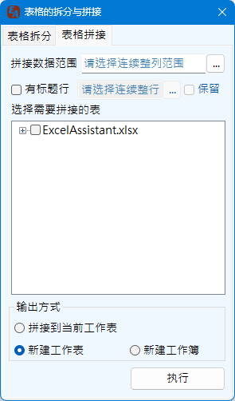
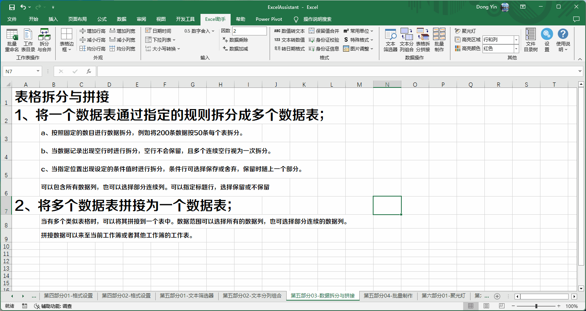

表格的拆分与拼接功能适用于较规则记录的多行记录表格，需要将工作表拆分成多个表，或者需要将多个表的数据进行拼接的情形下使用。
Excel助手Ribbon菜单中数据操作区域点击表格拆分拼接按钮即可调出如下操作界面：
可以将当前工作表的数据按照指定的规则进行拆分，拆分的数据将新建数据表存放。 该操作不改变当前数据表内容。
拆分数据范围指需要选择整列的范围，相当于需要输出的字段。
标题行设定，需要选择整行的范围（可以为多行），设定该值，则指示程序数据的起始的位置，如不设定，默认数据的起始位置为第一行。选择保留标题行，则输出的每个拆分表均包含该标题行。
拆分条件设定，程序提供三种拆分方案，第一种方式为固定行数，如拆分的数据极具规律，则可以采用此方式。第二种方式为空行拆分（注意，空行指无数据的行，而不是空格，或者不显示但具有数值的行），多个空行将作为同一个空行处理，避免拆分出空白的表格。第三种方式为按照指定条件值进行拆分。
第三种方式下，指定列（字段）的值作为拆分验证的条件，需要注意的是，指定列号为选定范围内的列序号，而不是Excel中的列序号。条件值可以是数字或者字符串，接受*,?作为通配符使用，使用通配符时，条件值识别为字符串。通配符*表示任意个字符，?表示一个字符，参考数据筛选及替换中关于通配符的说明。条件行可以保留或舍弃，如保留将随上一个分区。
输出拆分出来的工作表时，可以在当前工作簿新建工作表，也可以新建一个工作簿存放所有的工作表。输出的新建工作簿处于未保存状态，需要用户自行保存。
通过切换选项卡，可以转换到表格拼接功能。
表格拆分的逆向操作，可以将多个数据表或多个文件的数据表拼接到一个数据表中。
拼接数据范围指需要选择整列的范围，相当于需要拼接的字段。 与拆分不同的是，拼接数据范围的选择可以在任意的工作表上进行选择，它指示的是对每个需要拼接的工作表中数据的相对位置。当前工作表如不在拼接工作表目标列表中，则不会读取当前工作表的数据内容，哪怕在此表上选择区域。
标题行需要选择整行的范围（可以为多行），设定该值，则指示程序数据的起始的位置，如不设定，默认数据的起始位置为第一行。选择保留标题行，拼接时也会将标题行拼接在内。 拼接表格标题行位置选择类似数据范围选择，具有选择仅指示位置，与操作所在的工作表无关的特点。
通过工作表列表框的右键菜单可以选择添加、删除文件以及进行相关选择操作，只有被选定的工作表将进行拼接操作。
输出方式可以选择拼接到当前工作表，或者在当前工作簿新建工作簿，也可以新建一个工作簿。 当选择拼接到当前工作表时，是否在工作表列表中选择该列表并不重要，即使选择也会自动忽略；如选择其他选项，则与当前工作表无关，如当前工作表属于被拼接对象，则需要在列表中勾选该工作表。
选择拼接到当前工作表选项时，拼接起始列数与选择的列数相同，而新建工作表或工作簿时，拼接的起始列数为1。即选择拼接数据范围为C~D列，如果拼接到当前工作表，则数据仍在C~D列范围内拼接，如果新建工作表或工作簿，则数据拼接在A~B列，保证新表中不会出现空白列。
通过固定行数拆分表格示例：
通过空白行拆分表格示例：

通过条件拆分表格示例：

多个工作表拼接同一个工作表示例：

多个文件内的表拼接到同一个工作表示例：

使用表格拆分与拼接功能需注意如下事项：